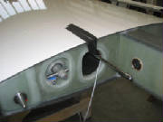
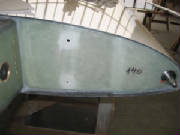
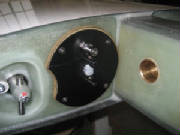
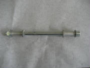

|
August 15th, 2010 1.5 hours - Unpack left wing
and prepare for assembly
I removed the protective wrapping from the left wing, removed masking tape residue with acetone, slid
the flaperon hinge pins out of the mounts and set up padded saw horses to prepare for wing assembly.
|
| Spoiler linkage at wing root |
August 20th, 2010 2.5 hours - Install flaperon counterweights
I marked the locations of the flaperon counterweights and prepared the flaperon for mounting the counterweights
by sanding the gel coat down to bare flaperon fiberglass. Then I held each counterweight in place with vice-grip pliers
and drilled the mounting holes through the flaperon (installing a cleco in each hole after I drilled it). I clean and
roughened the surface of each counterweight with 80-grit aluminum oxide sandpaper, mixed epoxy and installed the counterweights
with epoxy and blind rivets.
August 21st, 2010 2.5 hours - Spoiler slot drains
and wingtip light
I drilled a 5 mm water drain hole at each end of the spoiler slot, as instructed by the kit manual, and
applied a red sticker to mark each hole.
I cut away the wing tip recess for the wing tip light, as indicated by
mold marks. I then carefully cut the wing tip light clear plastic cover to fit the recess, by a series of cut and fit
trials. I masked the wing recess and painted the exposed edges with white lacquer. I fished the wire conduit tube
out of the wing and fed the wing tip light wire through it. I will wait to install the lights and the clear cover until
I have hooked up the lights and confirmed that they operate correctly.

August 22nd, 2010 5.5 hours - Spoiler linkage
I followed the kit manual instructions to rig the spoiler linkage, cut the push rod to length and install the
push rod end fitting.
First I installed the eccentric cam next to the torque rod at the wing root.
Then I cut a 4 mm spacer from some scrap material and clamped the torque tube arm to the cam with the spacer
between the cam and the arm.
I rigged a jig to hold the end of the spoiler lift rod 16 mm below the surface of the wing, as instructed by
the manual, then lifted the rod up until it touched the jig and marked the push rod at the shoulder of the push rod end fitting.
With the linkage now fixed by the clamp at the wing root, I temporarily mounted the rod end bearing in
the forks of the spoiler lift arm. The bolt with the ground-down head is used here. With the lift rod touching
the bottom of the jig, I determined where to cut the rod so that it ends at the shoulder of the fitting.
Then I disconnected the push rod from the linkage at the wing root, which allowed me to pull the push rod far
enough out of the spoiler slot to lift it up and cut off the end. I used a small tubing cutter to cut the end.
I fashioned a drill jig from hardwood to drill holes through the push rod and end fitting, then riveted the end fitting to
the push rod with pull rivets.
August 27th, 2010 3.5 hours - Spoiler linkage
I reconnected the spoiler pushrod to the linkage at the wing root. You can't get both hands inside the
wing at once, so I taped an allen wrench to a socket extension, inserted the wrench into the hex head on the bolt, then reached
in with a wrench to put the nut on the bolt. There was a plain nut on the bolt originally, so I replaced it with a nylon
lock nut, hoping that I won't need the nut elsewhere. I also used Loctite on the nut.

Then I attached the push rod to the spoiler lift rod and used my dremel tool to remove enough material from
the spoiler slot opening lip to clear the bolt that attaches the spoiler to the rod, as instructed by the kit manual.
In preparation for fitting the spoiler to the opening in the wing, I first put tape around the opening, with
the edge of the tape aligned with the edge of the wing recess. Then I marked a reference line on the tape exactly one
inch from the edge of the recess.
Then I covered the top surface of the spoiler with tape. This allowed me to mark the recess outline on
the spoiler. The tape on the spoiler and the wing also protects both from scratches and dings while cutting and fitting
the spoiler to the wing recess.
Next I screwed the threaded brass tubes over the bolts in the bottom of the spoiler
-- five long and one short. I checked the fit of the tubes to the spoiler plate, and needed to enlarge two of the holes
slightly with a file to allow the tubes to slip easily into the top of the spoiler plate.
Then I attached the spoiler
plate to the two lift rods, lowered it into the wing and checked the fit of the spoiler cover with the wing recess.
I cut away most of the excess material with my bandsaw, then slide the cover into the holes in the spoiler plate and used
the reference outline marked on the tape on the wing to measure back to the cover and mark the outline onto the tape covering
the top of the cover. From that point I carefully cut and filed away the edges of the spoiler cover until it fit nicely
into the wing recess, and allowed me to lift the spoiler up and down using the mechanism at the wing root.
August 29th, 2010 3.5 hours - Spoiler installation
It took a fair bit of final sanding to get the spoiler fitted to the wing so that it dropped cleanly into the
recess and lifted without binding.
Once satisfied with that, I completed the assembly of the spoiler cover and
spoiler plate.
First, the plate is inserted into the spoiler plate, then the springs are slipped over the
brass tubes and secured with large washers and nylon lock nuts, using Loctite. The nuts are screwed down until they
are tight against the ends of the brass tubes. Then a second brass tube is screwed onto the end of two of the threaded
rods -- the second one from each end of the spoiler -- and secured with Loctite. An L-shaped bracket is then slipped
over each of the extension tubes to the mid point of the tube and the bracket is riveted to the spoiler plate at that point
with pull rivets. It appears that the purpose of these brackets is to keep the spoiler cover plate from twisting and
perhaps binding when the spoiler is raised into the air stream.
The final step is to adjust the linkage until the desired opening and closing torque on the torque tube is
achieved. The kit manual shows a special fitting for a torque wrench to measure the actuating torque, but I found that
simply using a 10 mm socket on the bolt head at the end of the torque tube worked fine. I removed the spoiler and adjusted
the ball end on the push rod several times to get the desired actuating torque of 0.8 kilogram-meters (69 inch-pounds).
Then I secured all of the bolts with nylon lock nuts and Loctite.
September 6th, 2010 0.8 hours - Install fuel gauge fittings
After a few tries I found that expanding the print size on the fuel gauge template from the kit manual
to 112% produced the proper full scale layout. I used this to mark the fuel gauge port holes on the wing root, drilled
holes, sanded the surface and installed the fittings with epoxy.

September 10th, 2010 2.1 hours - Fuel cap and hinge access opening
I installed the fuel gauge tubing by heating one end with my heat gun, slipping it on one fitting and
securing it with two cable ties, then cutting it to length, heating the other end and securing that end with cable ties.
The fuel cap opening in the tank was marked by the factory, and was visible as an undulation in the wing
surface when viewing it at a shallow angle. It was also easy to verify by tapping the surface and hearing a hollow sound
over the opening.
I removed the wing skin over the tank opening with my Dremel tool and an abrasive sanding drum.
I covered the area with masking tape to protect the wing surface from a possible slip with the tool, and worked gradually
until the opening in the wing surface matched the rim of the tank opening, checking with the filler cap until it screwed in
flush with the surface. Then I screwed the curved vent tube into the cap, with epoxy on the vent tube threads, until
it was fully seated with the tube pointing toward the trailing edge of the wing.

Leaving the epoxy to cure on the tank vent, I began opening up bottom side of the hinge clearance opening in
the flaperon closest to the wing root end, using the pictures in the kit manual as a guide.
September 12th, 2010 0.8 hours - Fitting flaperon
I turned the wing bottom-up, then slid the flaperon pins into the mounting hinges on the wing until it touched
the wing at the outer end. I looked into the access point at the hinge near the wing root to see how much further it
needed to go in order to fully seat the inner hinge pin. I estimated approximately 11-12 mm, so I marked 9 mm on the
wing for a first cut.
Then I removed the flaperon, cut most of the wing material away with a Dremel cutting wheel,
then used a file to remove the remainder up to the line had marked. Then I installed the flaperon again to check the
fit. This showed that I still have about 3 mm to go.
September 17th, 2010 2.5 hours - Fitting flaperon
I turned the wing bottom side up and slid the flaperon into the hinges. I marked the hinge positions
on the wing and flaperon with tape -- an idea from Jonas Boll, who is making very rapid progress on his Virus SW. Then,
after installing and removing the flaperon several times, bumping the flaperon against the hinges and gradually enlarging
the clearance openings, I achieved the specified 33 degrees of flaperon down travel. Ultimately, the down travel limit
was the outboard flaperon counterweight contacting the lower surface of the upper wing skin.
A technique that worked
well was to wrap a narrow strip around the edge of the hole at the hinge point, which helped to identify the exact points
of interference.
I also removed a narrow strip (about 1.5 mm) from the aft edge of the bottom wing surface, where
it rubbed against the flaperon at full travel. This was described in the kit manual as often required.
September 18th, 2010 3.2 hours - Fitting flaperon
I checked the upward travel of the flaperon and was able to achieve the specific travel of 28 degrees by trimming
the aft edge of the inboard end of the upper wing skin. This trim was about 2 mm at the wing root, tapering to zero
about 50 cm from the root.
Then I marked the inboard end of the flaperon at the inboard wing root and trimmed the
end of the flaperon at that point. I used masking tape to mark the trim line, which provided a straight reference line
and also protected the flaperon surface from tool slips. I had to remove approximately 16 mm of the flaperon.
I my Dremel tool with a cutoff disk to remove most of the excess, then removed the remainder with a Dremel sanding drum and
a small flat file.
Last I used a strip of tape to mark the excess material at the trailing edge of the flaperon
to match the wing trailing edge, extended along the break in the molded surface. I trimmed the flaperon to the edge
of the tape using a Dremel sanding drum, flat file and sanding block.
September 19th, 2010 1.5 hours - Wing root connection plate
I printed the left wing connection plate template at 111% oversize to get the right dimensions, cut it out
and marked the mounting holes, using the plate and measurement from the fuselage to confirm the position. I drilled
four holes that will later be tapped with M4 threads.
I heated the ends of the fuel and return line tubing and
slipped them over the tank fittings inside the wing, securing each tube with three cable ties, as instructed in the kit manual.
September 23rd, 2010 1.5 hours - Wing root connection plate
I tapped the four holes drilled to mount the end plate with an M4 tap, then installed the fuel supply and fuel
return fittings in the end plate, securing the nuts with Loctite. I crimped and soldered the electrical pins to the
four wires coming from the wing tip lights, matching the wire colors with the wires at the connector coming from the strobe
power supply in the fuselage. I put some heat shrink tubing over the wire bundle, then pushed the pins into the nylon
connector housing. I heated the fuel lines coming from the tank, pushed them over the fittings in the end plate, and
secured each fuel line with three cable ties. I pushed electrical connector into the end plate, then fastened the end
plate to the wing root with four M4 screws.
September 24th, 2010 2.2 hours - Check flaperon moment
To check the balance of the flaperon, I made four jigs from some scrap lumber, with a 1/4 inch bolt in
each jig to create a surface for the flaperon hinge pins to roll freely while taking the measurement. I lined everything
up with lasers, put the flaperon on the jigs, checked that it rotated freely with no interference, then measured the force
at the trailing edge of the flaperon at the root end.
The kit manual calls for 600 to 700 grams, but I measured
886 grams. The kit manual says to add or subtract counterweights as required to achieve the proper balance range.
I found that if I placed all four of the counterweights from the right flaperon kit, I could achieve a balance force of 690
grams -- just under the maximum. It seems like something is wrong, but I re-checked the jig alignment, and even took
the measurements with the flaperon supported by only two jigs. All of the results were consistent within a couple of
grams.
So, I sent an email to Andrej at the Pipistrel factory for advice.
September 25th, 2010 1.5 hours - Install left flaperon
While waiting for advice from the factory on the flaperon balance, I installed the flaperon with the retaining
bolt and set the wing back in its shipping cradle in order to starting working on the right wing.
I found that
an opening of 16 mm with the flapron at full up-travel was sufficient to install the retaining nut, if I used a wrench with
most of the handle ground away. The wrench has a 5 degree ratchet and I was able to get one click at a time, but that
was enough.
September 26th, 2010 2.5 hours - Right wing
I unpacked the right wing, set it on padded sawhorses and removed the flaperon. I marked the counterweight
locations, sanded the flaperon surface down to bare material, sanded the mating surface of the counter weights, drilled 4
mm rivet holes through the flaperon and secured the counterweights in place with epoxy and 4 mm pull rivets.
September 30th, 2010 2.2 hours - Right wing fuel gauge and wing tip light recess
I sanded the wing root where the fuel gauge fittings will be installed, then drilled holes for the fittings.
I roughed up the mounting surface of the fittings and epoxied them into the holes, held in place with masking tape while the
epoxy cures.
I cut the opening in the wingtip for the lights, then masked the area and painted the exposed edges
with white spray paint.
October 1st, 2010 2.5 hours - Right wing spoiler linkage
I installed the spoiler stop cam at the wing root, then clamped the arm to the stop with a 4 mm spacer between
the arm and the stop.
I screwed the ball end bearing into the pushrod end cap and attached this assembly to the
spoiler pivot rod forks, using the 6 mm bolt with the thin head. I marked the pushrod at the shoulder in the end cap,
then disconnected the push rod from the lever arm inside the wing, pulled the rod out and lifted it clear of the spoiler well.
I cut the rod to the mark, using a small tubing cutter, sanded the burr from the end of the tube, and drilled
four 3.5 mm holes for the end cap rivets, using the jig I made for the left wing. Then I inserted the end cap into the
push rod and drilled the 3.5 mm holes in the end cap. Keeping the cap and rod aligned with the 3.5 mm drill inserted
through two of the holes, I drilled the other two holes to 4 mm and installed 4 mm rivets. I drilled and riveted one
hole at a time.
Then I drilled the other two holes to 4 mm and installed rivets in them also.
I reconnected
the push rod to the lever arm inside the wing, using a nylon lock nut and Loctite 243. Then I attached the other end
of the rod to the forks on the pivot rod in the spoiler well.
October 2nd, 2010 5.4 hours - Right wing spoiler installation, fuel cap, fuel gauge
I mounted the spoiler on the lift rods and unscrewed the ball-end bearing on the push rod until the opening
and closing torque was the 0.8 kilogram-meters (69 inch-pounds) specified in the kit manual.
Then I tightened the
lock nut on the ball-end bearing, installed the washers and nuts on all the mounting bolts, and marked all the threaded fasteners
with torque-seal.
I installed the spoiler cover springs with washers and nylon lock nuts, then screwed the two remaining threaded
brass tubes onto the second pin from each end, securing all with Loctite 243. Then I checked the angle brackets to make
sure they slide smoothly over the brass tubes, and riveted the angle brackets to the spoiler plate, centered on the lower
brass tube.
I mounted the spoiler on the lift rods and unscrewed the ball-end bearing on the push rod until the opening
and closing torque was the 0.8 kilogram-meters (69 inch-pounds) specified in the kit manual.
Then I tightened the
lock nut on the ball-end bearing, installed the washers and nuts on all the mounting bolts, and marked all the threaded fasteners
with torque-seal.
I opened up the fuel cap opening with my Dremel tool until flush with the rim of the fuel tank cap fitting
and the fuel cap screwed in and seated in the tank fitting. Then I applied epoxy to the fuel tank vent tube and screwed
it into the cap, leaving it pointed toward the trailing edge for the epoxy to cure.
I heated one end of the fuel gauge tube and slipped it over the top fuel gauge fitting at the wing root.
I secured it with two cable ties, then cut the other end to length, heated it and slipped it over the bottom fitting and secured
it with two cable ties.
October 3rd, 2010 4.8 hours - Right wing tip lights and connection plate
I threaded the wingtip light wire through the conduit from the tip to the wing root. I decided to replace
the connectors provided in the kit with crimped d-sub pins. I cut the wires to staggered lengths to reduce the bulk
of the connection, crimped male pins on one set of wires and female pins on the other. I secured and insulated each
connection with heat shrink tubing, then covered the entire splice with heat shrink tubing. If I need to break this
connection later for servicing, I will cut off the heat shrink tubing, then replace it afterward.
I marked the mounting holes for the connection plate, drilled them and tapped them for M4 threads. I
heated the end of the fuel tube, slipped it over the fuel pickup fitting inside the wing and secured it with three cable ties.
Then I attached the fuel line, pitot line and static line to the connection plate and installed the connection place with
four 4 mm button head screws.
October 23rd, 2010 3.5 hours - Flaperon counterweight update
Note: The following discussion of additional flaperon counterweights applys
only to my Sinus kit. The Pipistrel factory has reviewed this in some depth, and has concluded that there was
some variation in the weights of my flaperons. They are not seeing this elsewhere, so my experience appears to be unique.
I do strongly advise, however, that other kit builders check the balance of their fully-assembled flaperons to ensure that
the final balance moment is within the specified range.
The factory provided some more specific data on flaperon balance, instructing to measure the moment force
at 16.5 cm from the wing root, with the result acceptable between 650 g and 850 g. Pipistrel also sent some additional
balance weights for me to add to my flaperons.
After
receiving the counterweight package from Pipistrel, I removed the left flaperon from the left wing and set it up for measuring
the balance moment. I placed the new counterweights from the factory in place temporarily. The new counterweight
instructions called for replacement of the original 110 mm counterweight with a second 480 mm counterweight, in addition to
adding two new counterweights. For a first check of the balance moment, I tried the three new counterweights with all
of the original counterweights still in place. This produced a balance moment of 728 g, which was within the specified
range of 650g - 850 g, but I calculated that if I cut 125 mm from the new 480 mm counterweight, I would get a moment of 750
g -- the center of the range. Because of the location of the rivet mounting holes in the counterweight, I settled on
cutting off 115 mm. This produced a moment of 748 g for the left flaperon. Again,
as noted above, this particular counterweight installation is specific for my kit, and should not be necessary for other kit
builders. You will need to confirm this by measuring the moment of your flaperons, after they are fully assembled and
trimmed to final dimensions.

I installed the new counterweights on both the left and right flaperons with epoxy and rivets.
Also, I had mistakenly installed the original rivets on the left flaperon counterweights with the head on the metal
side, rather than on the flaperon flange side as called for in the manual. I had asked Andrej about this. He said
that it was probably OK, but preferred that I remove the rivets and install new rivets with the heads on the other side.
So, I drilled out the rivets and installed new rivets ordered from Pipistrel, this time with the heads on the flaperon flange
side and the pulled rivet tail on the metal side.

October 27th, 2010 0.5 hours - Right flaperon - measure moment and re-install
I re-measured the left flaperon moment with the counterweights permanently installed with rivets and epoxy.
The final moment was 740 g.
I greased the hinge bushings on the left wing and the hinge pins on the flaperon, slid
the flaperon into the hinge points, and installed a washer and nylon lock nut on the hinge pin, securing it with Loctite 243.
October 30th, 2010 1.8 hours - Pitot tube, right flaperon installation
I used my Dremel to cut a 7/8" diameter hole in the pitot-static probe mount location, marked the mounting
hole locations for the four mounting screws, fished the pitot and static lines out of the wing, drilled the mounting holes
to 7 mm, installed nutserts with epoxy, squeezed them slightly to set them in place while the epoxy cures, then applied grease
to the four mounting screws and screwed them into the nutserts to prevent any stray epoxy from sticking to the threads.

I installed the threaded flaperon hinge pin with red Loctite 262, then inserted the flaperon temporarily to
see how much of the wing skin needs to be cut away at the outer end of the flaperon. I will need to cut approximately
14 mm from the wing to fully seat the flaperon hinge pins.
October 31st, 2010 3.5 hours - Mount and trim right flaperon
I mounted the flaperon on the wing and determined that I needed to cut 13 mm from the wing at the outboard
end of the flaperon in order to get full seating of the hinge pins. Then I checked for up and down movement. I
opened up the flaperon at the hinges until reaching 33 degrees down movement. I did not have to remove any material
from the wing bottom surface at the trailing edge. For 28 degrees up movement I had to remove about 2 mm from the top
surface trailing edge.
I removed the excess material at the root end of the flaperon to align with the wing root.
I trimmed the trailing edge of the flaperon to match the wing trailing edge at the outboard end, then
continued the trim along the mold break in the lower surface, after marking the edge with blue masking tape.
I measured the flaperon moment, which was 666 g -- within the allowed range of 650 - 850 g.
I greased
the hinge bearings and hinge pins, mounted the flaperon, then installed the retaining washer and nut on the threaded hinge
pin, securing the nut with Loctite 243
November 7th, 2010 1.3 hours - Install pitot tube and wingtip light connector
I pushed the pitot and static tubes onto the pitot tube with the aid of a heat gun to soften the tubes,
then secured each tube with three tie-wraps. I then mounted the pitot tube to the wing with 4 mm screws and Loctite
243.
I had ordered a Molex crimper #63811-1000 from Jameco Electronics. I used this to attach electrical connector pins to the four wingtip light wires,
using the 1.4 mm slot for the conductor crimp and the 2.8 mm slot for the insulation crimp. I then inserted the pins
into the connector, used heat shrink tubing for strain relief, and snapped the connector into the wing root connector
plate.


This completes both wings, except for flaperon gap seal, sealing the tip light lenses (after checking
the lights for proper operation) and trimming the wing root to fit the fuselage.
May 26th, 2011 0.4
hours - Prepare for mounting wings
In preparation for mounting the wings, I measured the wing mount
bushings in the fuselage and the mounting pins in the wings. First, I checked my digital calipers to confirm that inside and outside measurements are equal. Then I measured
the inside diameter of the bushings, which were consistent at 13.97 mm. Then I measured the mounting pins and got exactly
the same reading -- 13.97 mm. I anticipate some very slight interference when fitting the wings, but will wait
until I try them. Jonas Boll said that he had to open up the bushings slightly with some emery cloth.
June 4th-5th, 2011 29.5 hours - Mount wings
With the help of five members of the local EAA chapter, I
began the process of mounting the wings. We positioned
the fuselage and put the wings on padded saw horses. I put the tail wheel on a platform to get it approximately level
and make it easier to fit the wings. Starting with the left wing, we lifted it into position and slid it into the spar
opening in the fuselage to check the alignment and fit of the wing pins into the fuselage bushings. The first discovery was a slight interference fit between the cross-pin in the flaperon end fitting with the slot
in the end of the flaperon torque tube in the fuselage. Checking the pin and slot with a dial caliper, I found that
the slot was about 0.03 mm smaller than the pin. After some discussion of how best to open up the slot, we concluded
that it would be best to remove the torque tubes from the fuselage and adjust the fit, the re-install them. So, I found the assembly tools that I used originally to install the flaperon
controls. It was a challenge to get the allen wrench tips on the tools to engage with the bolt and special nut at the
inside ends of the torque tubes, but I was finally able to accomplish this by shining a small flashlight down the tube while
squinting to look at the far end of the tools and manipulate them into the bolt on one side and the nut on the other.
After that, it was straightforward to remove the bolt, then the torque tubes. Then I carefully opened the slots in the ends of the torque tubes with a metal file until they would slide over the
flaperon fittings with slight force, and no slop in the fit. Obviously, this would have been better accomplished earlier, before the first installation of the flaperon torque
tubes, and I have added that note to the web site. The wing pins would not slide into the bushings
in the fuselage, so I wrapped emery cloth around a 1/2" drill for a tight fit, then ran that into the bushing to remove
some material. I did this a bit at a time, adjusting the emery cloth wrap to increase the size of the bushings until
the pins fit smoothly.
Having discovered the tight fit of the flaperon torque tube connection, I checked the fit of the spoiler
control with the spoiler fittings in the wings. I could get the control to slide over the fittings, but the fit was
very tight. So, I used a file to open up the slots in the fittings slightly. The process
of manually maneuvering the wings into position was difficult, but workable when handling one wing at a time. We could
see that it was going to be troublesome and time-consuming to continue in this manner through the entire wing mount process,
and it was going to require at least four people throughout. So I decided to construct some wheeled cradles to support
the wings at the right height, adjustable in height and tilt. I figured that the cradles would allow me to proceed
with the help of just one person, and perhaps by myself.
June 9th-12th, 2011 20.2
hours - Continue mounting wings
I constructed two cradles using some materials left over from building the house. Each cradle is
mounted on four castered wheels. With the help of neighbor, I lifted the wings onto the cradles. With the wings
on the cradles, I found that I was able to adjust the height and alignment angles, and slide the wings into and out of the
fuselage, by myself.
|
| The lower clamp allows height adjustments. The upper clamp allows tilt adjustments. |
I hooked up the wingtip lights, installed a 3A fuse in the
circuit and turned them on. The LED tip lights and the tip strobes all worked, so I can now complete the mounting of
the lights and the clear plastic lenses. I found that
I had to do one last adjustment to the inside diameter of one wing mount bushing, then started the alignment of both wings
so that the spar pin holes in the spars line up. Pushing both wings against the fuselage bushings left a little over
2 mm of further movement to line up the spar pin holes. I also noted that with the spars flush against each other, the
bushings on the left wing were both seated, but on the right wing, the forward bushing was seated, but there was a gap at
the aft bushing. So, I needed to remove more material from the forward bushing. Pipistrel uses a special tool to remove material from the bushings, but I rigged a flat mill file with a jig to steady
it and keep it parallel to the surface, then filed 2 mm from the end of forward bushing on the right side.
I continued working on fitting the wings by removing small amounts of material from the wing bushings
on the right side until the spar pin holes lined up. This required inserting and removing the wings several times.
I also had to remove some material around the spar opening in the fuselage, and remove some material from the wing root.
The wing cradles made the entire process much simpler and quicker than the manual lifting. Finally
I got everything aligned and was able to insert the spar pins. I was very glad to get this major step completed with
no major problems. It was time-consuming, but relatively straightforward. I re-installed
flaperon torque tubes and inserted the wings to check the fit. The extra engagement force of the flaperon controls made
is somewhat more difficult the get the wings on and off, but I was able to get it done.
June 18th-19th, 2011 20.0 hours - Continue mounting wings
I found that the foam padding on the wing cradles had too
much give, so I modified the wing supports to fit the wing contour and pad them with some thin, firm foam cut from a computer
mouse pad. The helped eliminate some of the readjusting of the cradles that I had found necessary. I reinstalled the flaperon push rods in order to adjust their length and
set the flaperons to neutral with the flap handle at zero degrees. I found that even with the rod ends screwed all the
way into the push rods the flaperons are about ten degrees above the neutral position. I wondered what could be wrong,
and thought perhaps the flaperon torque tubes, which came with the end fittings already installed in my kit, were not the
same, and perhaps were switched between right and left. So,
I pulled the wings off and checked the alignment of the slot in the end fittings with the axis of the lever arm. This
showed that the slot and the arm are exactly at 90 degrees, so the torque tubes are in fact identical. The only remaining
explanation is that the flap control handle mount and the torque tube mount are closer together on my plane than the push
rod adjustment will accommodate. I concluded that I had to either find a way to shorten the push rods or to call Pipistrel
and have some shorter rods fabricated.
After thinking about the flaperon push rods a bit, I decided
to see if they could be shortened enough to allow me to center the flaperons. I removed the lock nuts from the flaperon
push rods and screwed the rods ends all the way into the ends of the push rod to determine the length required to center the
flaperons. I determined that if I ground 2 mm off the lock nuts and 3 mm off the ends of the rods, I could use them,
so that is what I did. I reinstalled the push
rods, adjusted them to center the flaperons with the sticks centered, secured them with Loctite, then adjusted the control
stick stops and secured the stops with their lock nuts and Loctite.
I installed the spar pin bolts and tightened them to ensure
that the spars were snug together, then used a feeler gauge to measure the gaps and the front and rear of the spar center
support. I measured 0.132" at the front and 0.114" at the rear. Then I ground the shoulders of the two
spar center bushings down to those dimensions. I
then removed the wings, inserted the bushings into the wing support structure and remounted the wings with the bushings filling
the gap between the support structure and the spars. I
drilled a 10 mm hole through the front spar, using the bushing as a guide, then drilled from the rear bushing through the
rear spar and inserted the bolt through the bushings and spar to clamp the spar support structure to the spar.

|
| Bushings ground to measured dimensions |
|
| Bushings in place between spar support structure and spar |
|
| Through bolt secures support structure to spar |
More detail on wing cradles
I've had a few questions about the cradles I built to install and remove the wings, so here are some
additional pictures and some description: I made the cradles mostly from materials I already had on hand. The
base of each cradle is a 10-ft length of 2 x 8 lumber. At each end is another 3-ft length of 2 x 8 standing vertical.
The cross-pieces for the wheels are 4-ft lengths of 2 x 4 lumber. The large gussets are cheap 3/16" luan plywood,
available from Lowe's or Home Depot. Each dolly has four swivel casters from Harbor Freight. The whole thing is
assembled with drywall screws. I created a vertical pocket with lengths of 2 x 2 and
plywood on the upright 2 x 8's at the end of each cradle. A vertical 2 x 4 can slide up and down in the pocket to adjust
the height of each end of the cradle, with a C-clamp to hold the support at the desired height. The cross members at
the top of the cradle are 2-ft lengths of 2 x 4, to which a piece of plywood is screwed. Each end of the cross member
has a 5-in long wooden wedge shaped to fit the bottom of the wing, topped with a thin foam rubber pad cut from a mouse pad.
The cross member pivots on a 1/4" bolt, with another C-clamp to the plywood extension to the vertical post at the desired
tilt angle. The cradle can thus be adjusted in height at each end, and rotated about the pitch axis of the wing until
the wing lines up with fuselage bushings and the wing spar bushings are aligned to insert the main spar pins. The cradles are positioned under each wing with the inboard end of each cradle 36 inches from the fuselage.
This distributes the weight fairly evenly and allows the doors to be opened with the cradles in position. I also built a platform that raises the tail wheel to level the pitch reference template. I always install
and remove the wings with the tail raised to the level reference position.
|
| C-clamp holds post at desired height |
|
| C-clamp holds cradle at desired tilt angle |
|
| Platform elevates tail wheel to level flight position when installing and removing wings |
July 1st, 2011 0.5 hours - Wing final fit check
I installed the center spar bolt and the two
spar pin bolts for a final fit check, although the wings have to come off at least one more time for the spoiler lock position
adjustment

July 2nd, 2011 3.5 hours - Install flaperon gap seals
I installed the flaperon gap seals as follows:
I cleaned the trailing edge of the wing with denatured alcohol.
I applied a strip of double-sided tape along
the trailing edge, leaving about 1 mm between the tape and the edge of the wing surface. I left the plastic cover strip
in place on the top surface of the tape and trimmed the tape about 1 cm beyond each end of the flaperon.
I temporarily
taped the gap seal to the wing in front of the tape, trimmed it to length leaving some excess, and cleaned it with alcohol.
After cleaning the gap seal, I taped it in position
over the tape, with the forward edge of the gap seal strip about 3 mm back from the forward edge of the double-sided tape,
leaving the plastic strip in place on the tape.
With the gap seal held in position by pieces
of tape about every three feet, I began peeling the plastic strip from the double-sided tape, pressing the gap seal to the
tape as the plastic strip was peeled away.
After all of the protective plastic was removed,
I went back over the gap seal and carefully pressed it against the tape for full contact along the entire length.
I trimmed the wing root end of the gap seal
flush with the wing surface. I trimmed the wing tip end about 1 cm beyond the end of the flaperon
I applied a strip
of white mylar tape along the seam, with half of the tape on the gap seal and half on the wing surface. At the wing
tip end of the gap seal, I secured it with additional tap strips at 90 degrees to the strip.
July 9th, 2011 1.1 hours - Drill wing root drain
holes and reinforced wingtips for light lenses
I needed to move some things around
inside the hangar, so with the wings now mounted, I was able to pull the plane outside the hangar for the first time.
Note the mountains beckoning the the background.
My wings were not marked for drain holes at the wing root. Not being sure exactly where to drill
the holes, and needing to be careful to avoid penetrating the gas tanks, I had written Pipistrel for some placement instructions.
The factory provided some written instructions and dimensions -- the key point being that there is a 20 mm to 30
mm gap between the forward face of the spar and the aft tank bulkhead. The forward drain hole is drilled into this
gap, about 30 mm from the wing root. The aft drain hole is less critical, located about 10 cm behind the aft edge
of the spar and 45 mm from the wing root.
I pulled the wings away from the fuselage for this step, in order to
have a clear view of the spar location while locating the position of the drain holes.
|
| Left wing root drain holes |
|
| Right wing root drain holes |
After drilling the forward drain hole, I devised
a feeler from some bent wire to ensue that the hole was between the spar and tank, and not into the tank. Using the
feeler, I was able to confirm that the location of the hole is correct, and also to confirm that there is about a 30 mm distance
between the spar and the tank on the left wing. The distance between the spar and the tank is greater on the right wing,
because the spar is further back.
Other kit builders had noted that the wing skin
was quite thin at the recesses for the wing tip light lenses, and required some reinforcement to provide sufficient material
for the mounting screws to hold. I mixed some epoxy and added some layers of fiberglass at the spots where I will be
drilling holes for the screws that will mount the lenses.
August 13th, 2011 2.2 hours - Install wingtip light lenses
I plugged the wing tip lights to their cables and confirmed that
they operated correctly. Then I used a hot glue gun to secure the lights in position in the tips. I confirmed
that the lenses would fit, then added small dabs of five-minute epoxy to secure the lights in position. I taped the wing tip light lenses in position and drilled four holes in
each lens for tapping with 4-40 threads. I removed the lenses and tapped the holes in the wing tips with a 4-40 tap.
Then I enlarged the holes in the lenses to 1/8" and countersunk them. Finally, I applied a bead of white silicone
around the lens recesses in the wing tips, placed the lenses in position and secured then with 4-40 stainless flat head machine
screws.
August 27th, 2011 0.5 hours - Install trailing edge protection
I decided I had to
do something to stop the repeated painful encounters with the wing trailing edge. I bought some foam tubes used for
insulating pipe, slit them down the side and slipped them over the wing trailing edge. I should have done this weeks
ago.
|